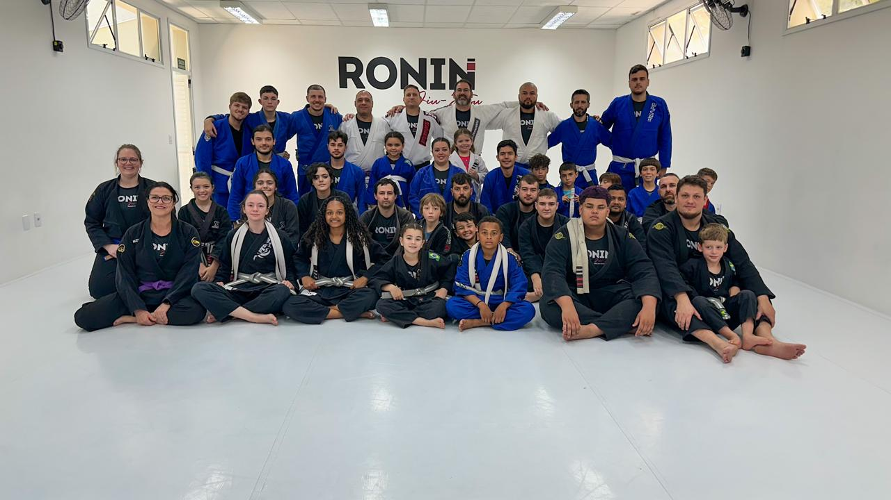
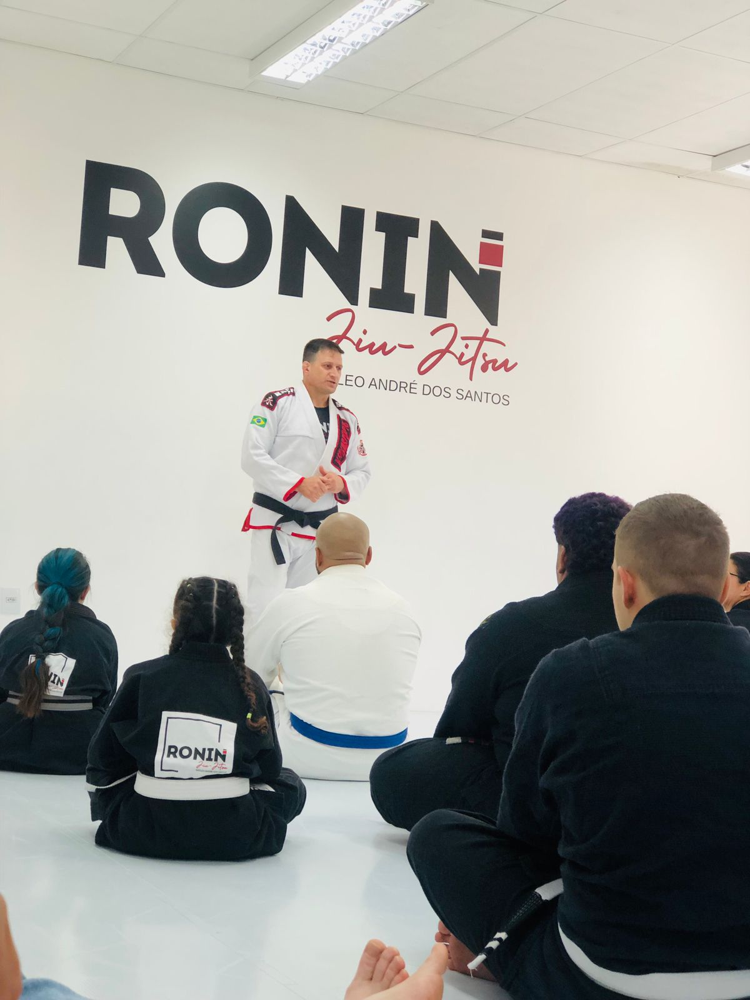

Ronin Jiu-jitsu
Núcleo André dos Santos
A Arte Suave
O Ronin Jiu-jitsu - Núcleo André dos Santos foca na disciplina, respeito e técnica. Nossa missão é proporcionar um ambiente onde cada aluno alcance seu potencial máximo no tatame.


Nossa Metodologia
Com treinos adaptados para todos os níveis, do iniciante ao avançado, nosso foco está na evolução técnica constante e no fortalecimento da mentalidade ronin dentro e fora do tatame.
Depoimentos
Em breve
Em breve